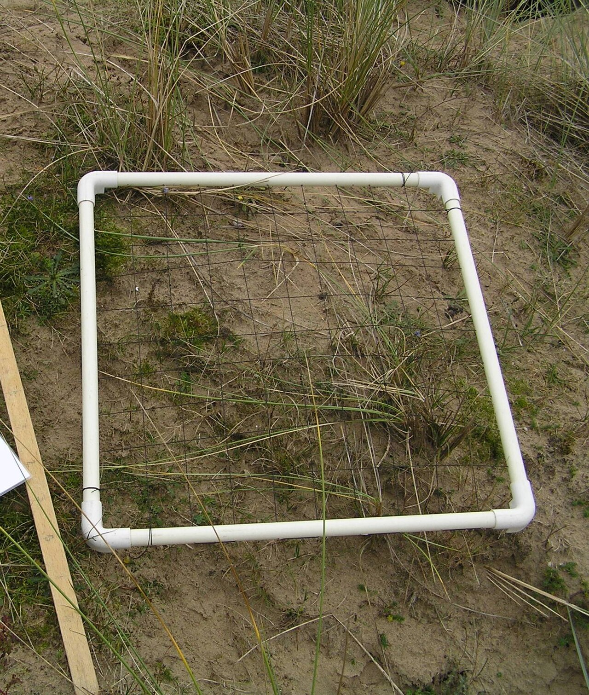

种群的数量特征
本期导读
种群密度 · 调查方法 · 年龄结构

视频原话 · 导读3 句
- 同学们好！这节课梳理人教版选择性必修二第一章第一节——种群的数量特征。7.8s
- 高考常考样方法和标记重捕法的计算与误差，以及年龄结构、性别比例对种群数量的影响。8.9s
- 我们按八个考点梳理，每个考点都讲清楚怎么考、怎么做。5.5s
种群密度01#
种群：一定空间范围内，同种生物所有个体形成的集合
种群密度 = 个体数 ÷ 面积（或体积）
最基本的数量特征
易错
三看：同一区域 · 同一物种 · 全部个体。“池塘中的全部鱼”“全部成年鲤鱼”都不是种群
视频原话4 句
- 考点一，种群密度。种群是在一定的空间范围内，同种生物所有个体形成的集合。8.4s
- 种群在单位面积或单位体积中的个体数，就是种群密度。5.7s
- 种群密度是种群最基本的数量特征，它反映了种群在一定时期的数量。6.9s
- 易错：判断是不是一个种群，抓住三点：同一区域、同一物种、全部个体。一个池塘中的全部鱼不是一个种群。11.0s
样方法02#
适用：植物、活动能力弱、活动范围小的动物（蚯蚓、蚜虫、跳蝻、虫卵）
解题方法
先数框内，再只数上边、左边和左上角的个体；四条边都算就会偏大
视频原话5 句
- 考点二，样方法。适用于植物，以及活动能力弱、活动范围小的动物，比如蚯蚓、蚜虫、跳蝻和昆虫卵。10.7s
- 取样的关键是随机取样。方形地块用五点取样法，狭长地块用等距取样法。7.8s
- 计数时，样方内的个体全部计数；压在边线上的，只计相邻两边及其夹角上的个体，也就是“计上不计下，计左不计右”。11.4s
- 最后求出各样方种群密度的平均值，作为该种群密度的估算值。6.0s
- 考法：给出样方图数个体。解题方法：先数框内，再只数上边、左边和左上角的点，不要把四条边都算上。10.8s
标记重捕法03#
适用：活动能力强、活动范围大的动物（田鼠、鸟类、鱼类）
M : N = m : n
N = Mn / m
50 × 40 ÷ 10 = 200
| 情况 | m | 估算值 |
|---|---|---|
| 标记物脱落 | 偏小 | 偏大 |
| 标记个体更难被捕 | 偏小 | 偏大 |
| 未充分混合就重捕 | 偏大 | 偏小 |
误差分析只看 m：m 偏小 → N 偏大；m 偏大 → N 偏小（M、n 是实际数，不会错）
视频原话6 句
- 考点三，标记重捕法。适用于活动能力强、活动范围大的动物，比如田鼠、鸟类、鱼类。9.0s
- 第一次捕获并标记M只，放回后让它们与其他个体充分混合。6.2s
- 一段时间后第二次捕获n只，其中带标记的有m只。5.4s
- 按比例相等，N = M × n ÷ m。比如 M = 50、n = 40、m = 10，N 就是 200 只。10.7s
- 误差分析看 m：标记物脱落、标记个体更难被再次捕获，都会让 m 偏小，估算值偏大。8.7s
- 易错：标记后马上重捕、未充分混合，标记个体容易被捕到，m 偏大，估算值偏小。8.6s
其他调查方法04#
| 方法 | 适用对象 | 实例 |
|---|---|---|
| 逐个计数 | 分布范围较小、个体较大 | 某山坡上的珙桐 |
| 黑光灯诱捕 | 有趋光性的昆虫 | 农田中的趋光性害虫 |
| 红外触发相机 | 大型、警觉性强、难以接近 | 东北豹、东北虎 |
| 粪便 / 声音计数 | 难以直接观察的动物 | 粪便中的DNA、鸟类鸣叫 |
解题方法
先问动不动、跑多远（样方法 / 标记重捕法），再看有无趋光性、是否难以接近
视频原话5 句
- 考点四，其他调查方法。分布范围较小、个体较大的种群，可以逐个计数。7.6s
- 有趋光性的昆虫，可以用黑光灯诱捕的方法调查。4.8s
- 对大型、警觉性强的动物，可以用红外触发相机拍摄，比如调查东北豹。7.1s
- 还可以通过粪便中的DNA，或者动物的声音来计数。5.0s
- 考法：根据生物的特点选方法。解题方法：先问它动不动、跑多远，再看有没有趋光性、是否难以接近。10.4s
出生率和迁入率05#
出生率 + 迁入率 ＞ 死亡率 + 迁出率 → 种群密度增大
考法
春运期间大城市人口变化，主要取决于迁入率和迁出率；它们和出生率、死亡率一起直接决定种群密度
视频原话5 句
- 考点五，出生率和死亡率、迁入率和迁出率。它们直接决定种群密度。7.4s
- 出生率是单位时间内新产生的个体数目占该种群个体总数的比值；死亡率同理。8.0s
- 迁入率和迁出率，是单位时间内迁入或迁出的个体占该种群个体总数的比值。7.6s
- 出生率加迁入率，大于死亡率加迁出率，种群密度就增大，反之就减小。7.3s
- 考法：春运期间大城市人口的变化，主要取决于迁入率和迁出率，而不是出生率和死亡率。8.9s
年龄结构06#
年龄结构：种群中各年龄期个体数目的比例
易错
年龄结构只能预测趋势；稳定型的种群数量不一定稳定，还受气候、食物、天敌等影响
视频原话5 句
- 考点六，年龄结构。它是一个种群中各年龄期个体数目的比例。6.5s
- 增长型：幼年个体多、老年个体少，出生率大于死亡率，种群密度会越来越大。7.9s
- 稳定型：各年龄期比例适中，种群密度在一段时间内保持稳定。6.3s
- 衰退型：幼年个体少、老年个体多，种群密度会越来越小。6.1s
- 易错：年龄结构只能预测变化趋势。稳定型的种群，数量也不一定稳定，还受气候、食物、天敌等因素影响。10.8s
性别比例07#
性别比例→ 影响出生率→种群密度
- 性引诱剂诱杀雄虫
- →性别比例失调
- →雌虫难以交配
- →出生率降低
- →密度降低
易错
性别比例只影响出生率，不影响死亡率；诱杀雄虫不是靠提高死亡率来降低种群密度
视频原话4 句
- 考点七，性别比例。它是种群中雌雄个体数目的比例，通过影响出生率来影响种群密度。9.3s
- 应用：用人工合成的性引诱剂诱杀害虫的雄性个体。5.4s
- 雄虫减少，性别比例失调，许多雌虫不能完成交配，出生率降低，害虫的种群密度明显降低。9.3s
- 易错：性别比例只影响出生率，不影响死亡率；诱杀雄虫不是通过提高死亡率来降低种群密度。9.3s
数量特征的关系08#
解题方法
先找指向种群密度的四个“率”；同时指向两个率的是年龄结构，只指向出生率的是性别比例
视频原话5 句
- 考点八，各数量特征之间的关系。种群密度处在中心。5.9s
- 出生率、死亡率、迁入率、迁出率，直接决定种群密度。5.9s
- 年龄结构既影响出生率，又影响死亡率，可以预测种群数量的变化趋势。6.9s
- 性别比例只影响出生率。2.9s
- 解题方法：遇到概念图，先找指向种群密度的四个“率”；同时指向两个率的是年龄结构，只指向一个率的是性别比例。11.1s
易错速查✓
先自己判断，再点按钮查看对错与解析。
- 1一个池塘中的全部鱼是一个种群说法错误：包含多个物种，不是一个种群
- 2种群密度是种群最基本的数量特征说法正确。
- 3调查蚜虫、跳蝻的密度用标记重捕法说法错误：活动能力弱，用样方法
- 4标记物脱落会使估算值偏大说法正确。
- 5年龄结构为稳定型，数量一定稳定说法错误：还受气候、食物、天敌等影响
- 6诱杀雄虫通过改变性别比例降低出生率说法正确。
直接决定看四率，预测趋势看年龄！
视频原话 · 易错速查5 句
- 最后，用六道判断题检验一下。3.6s
- 判断一：一个池塘中的全部鱼是一个种群？错，包含多个物种。判断二：种群密度是最基本的数量特征？对。11.8s
- 判断三：调查蚜虫、跳蝻的密度用标记重捕法？错，用样方法。判断四：标记物脱落会使估算值偏大？对。12.3s
- 判断五：年龄结构为稳定型，数量一定稳定？错。判断六：诱杀雄虫是通过改变性别比例降低出生率？对。12.2s
- 八个考点串成一条线：直接决定看四率，预测趋势看年龄。我们下期再见！7.7s
图片来源
图片来源：Wikimedia Commons —— Yohan euan o4《Quadrat sample》CC BY-SA 3.0
Photo: Yohan euan o4, CC BY-SA 3.0